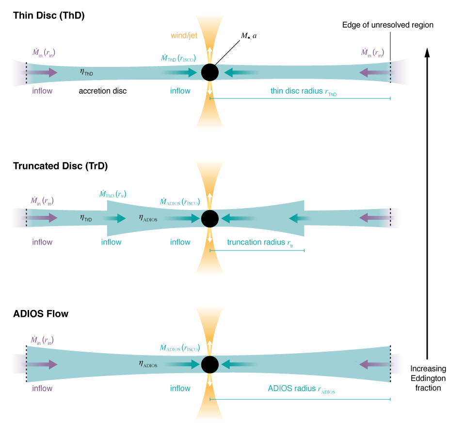
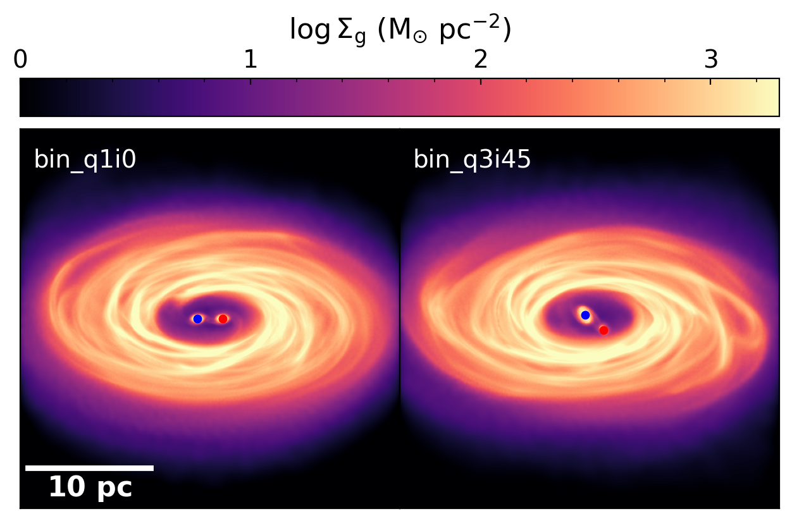
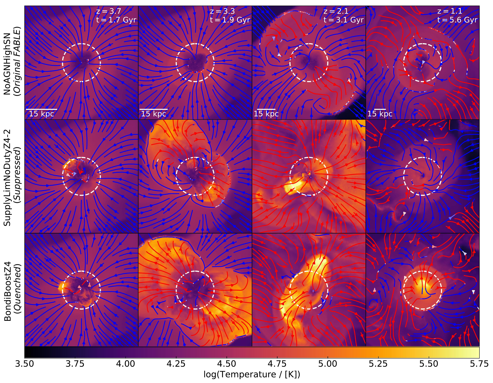
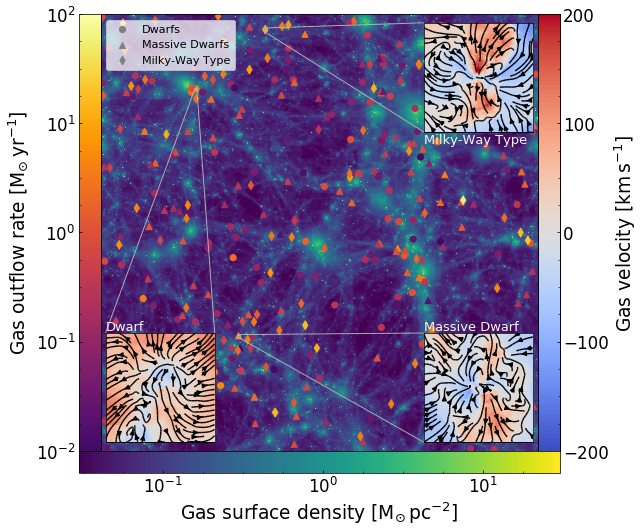
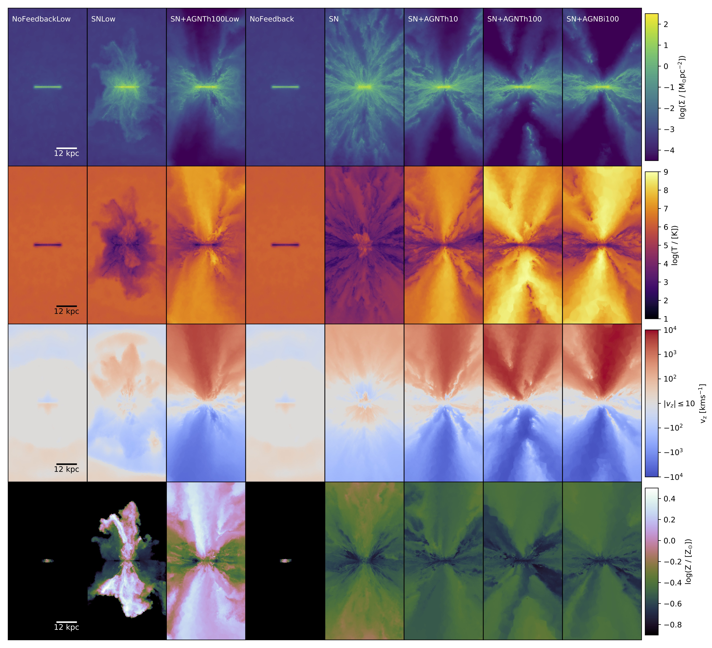

I am currently a Junior Research Fellow at St Catharine's College, University of Cambridge. My research aims to unravel the physical processes governing galaxy formation, especially the interface between galaxies and their supermassive black holes. Prior to this, I held a Flatiron Research Fellowship in the
Center for Computational Astrophysics
at the
Flatiron Institute in New York City. I received my PhD in Astronomy from the University
of Cambridge, where I pioneered the theoretical modelling of black hole feedback from active galactic nuclei (AGN) in dwarf galaxies, advised by professors Debora Sijacki and Martin Haehnelt.
My current research focuses on developing novel models of black hole evolution
(including black hole formation, growth, and feedback) for galaxy formation simulations,
which take advantage of the superior resolution and allow for detailed multimessenger predictions in preparation for the next-generation electromagnetic and gravitational-wave observatories.
I am also actively involved in the
LISA Consortium
and co-lead the Black Hole Working Group
of the Simons Collaboration on
Learning the Universe.
Download my CV
Research

Unified Accretion Disc Model
I developed a novel unified accretion disc
model for supermassive black
holes in galaxy formation
simulations, incorporating
results from state-of-the-art
general-relativistic
(radiation-)magnetohydrodynamics
simulations. With this innovative approach, we track the black hole mass and spin evolution (including Lense-Thirring precession)
across a range of radiative states using the super-Lagrangian refinement technique to accurately measure the fluxes onto the subgrid disc.

Supermassive Black Hole Binaries
Using my unified accretion disc model, I carried out an extensive suite of supermassive black hole binary simulations,
with a special focus on multi-messenger predictions. Notably, we find that the assumed accretion disc model significantly
affects observable luminosities, and we predict markedly different electromagnetic counterparts in SMBH binaries.
Crucially, the assumed disc model shapes SMBH spin magnitudes and orientations, parameters that gravitational wave observatories
like LISA and IPTA are poised to constrain.

Cosmological Zoom-In Simulations
I performed an extensive suite of cosmological
zoom-in simulations of individual
dwarf galaxies, varying the black
hole formation masses and
times as well as the black hole
accretion model. We find that
the accretion models commonly
employed in cosmological
simulations (in particular the fiducial Bondi model) fail to achieve
efficient black hole feedback in
dwarfs, however, alternative
accretion models may lead to
dramatic impacts, especially for overmassive black holes at
high redshifts.

A Little FABLE: Dwarfs in Cosmological Volumes
As part of the FABLE Collaboration, I systematically investigated the
impact of active black holes in
the dwarf galaxy regime within a
cosmological context. We find that
efficient black hole growth leads
to star formation suppression in
dwarfs, however, fiducial galaxy
formation models, such as the
FABLE simulations, cannot
reproduce the black hole activity
levels in dwarfs uncovered by X-ray
surveys. Overmassive black holes drive powerful outflows in FABLE’s dwarfs and leave kinematic signatures detectable by MaNGA.

Bipolar AGN-Driven Outflows
I implemented a model for bipolar AGN-driven outflows and coupled this to the multi-phase ISM model
from Smith et al., 2019. I used the super-Lagrangian refinement technique and carried out rigorous resolution tests
to identify the minimum requirements for optimally resolving the AGN energy injection.

Idealised Dwarf Galaxy Simulations
This project pioneered the
modelling of AGN feedback in
dwarf galaxies, using idealised
simulations. We find that active black holes in
dwarfs significantly boost the
galactic outflows, in agreement
with MaNGA observations, and
hypothesise that this could
contribute to the regulation of
star formation by preventing gas
inflows from the cosmological
environment.
Selected Papers
-
Sophie Koudmani, Rachel S. Somerville, Debora Sijacki, Martin A. Bourne, Yan-Fei Jiang, Kasar Profit,
A unified accretion disc model for supermassive black holes in galaxy formation simulations: method and implementation,
Submitted to Monthly Notices of the Royal Astronomical Society.
arXiv
ADS
-
Sophie Koudmani, Debora Sijacki, Matthew C. Smith,
Two can play at that game: constraining the role of supernova and AGN feedback in dwarf galaxies with cosmological zoom-in simulations,
Monthly Notices of the Royal Astronomical Society, 2022 (516, 2112).
arXiv
ADS
-
Sophie Koudmani, Nicholas A. Henden, Debora Sijacki,
A little FABLE: exploring AGN feedback in dwarf galaxies with cosmological simulations,
Monthly Notices of the Royal Astronomical Society, 2021 (503, 3568).
arXiv
ADS
-
Sophie Koudmani, Debora Sijacki, Martin A. Bourne, Matthew C. Smith,
Fast and energetic AGN-driven outflows in simulated dwarf galaxies,
Monthly Notices of the Royal Astronomical Society, 2019 (484, 2047).
arXiv
ADS
Selected Talks
Over the years, I have given various talks as part of conferences and seminar series. Below I provide a list of selected recorded talks:
For a general introduction to supermassive black holes, supernova explosions and their role in shaping galaxy formation, check out my public talk on Supermassive Black Holes or Supernovae: Who Calls the Shots? at the (virtual) Cambridge Astronomy Open Evening.
{kind=link}
{kind=link}
{kind=link}
{kind=link}
{kind=link}